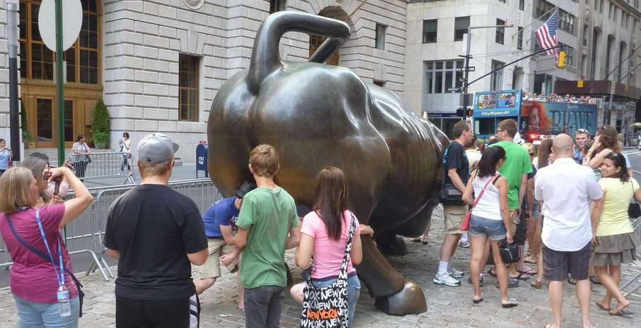

Only in New York! An entire store devoted to the Movie "The Big Lebowski". Talk about a nitch market. A lot of the props and decoration were hand made or drawn, like the Jeff Bridges cutout in front. The proprietor was dressed in a bath robe. I didn't get a pic so I snagged one off his facebook page. If you have not seen the film none of this would make sense to you.
loading...

. . . and another at a different area where it is reputed that touching certain parts of the bull brings good luck, or something.
This is wall streets famous bull statue. Two lines form to have ones photo taken; One at the front. . .
We did a much better job of pantomiming this one. And got some weird looks from the docent as well.